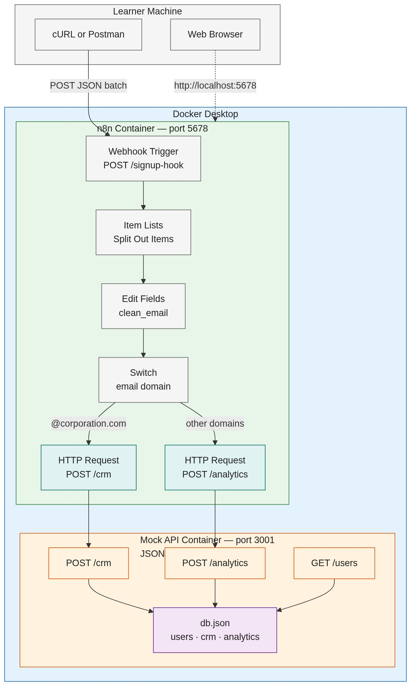

09 — N8n Training Week 1 — Hands-On Activities
| # | Section |
|---|---|
| 1 | One Continuous Activity |
| 2 | Use Case & Replication Guide — Scenario |
| 3 | Use Case & Replication Guide — Tools, Prerequisites & References |
| 4 | Use Case & Replication Guide — Design Architecture |
| 5 | Use Case & Replication Guide — Docker Setup & Project Structure |
| 6 | Use Case & Replication Guide — Mock API, Payloads & Procedure |
| 7 | Hands-On Activities |
| 8 | Activity Dependency Map |
| 9 | Consolidated Checklist |
The five hands-on sessions are not separate exercises — they are one continuous project built incrementally on a single shared scaffold. Day 1 creates the project environment, and every session after it extends the same Docker Compose project and the same self-hosted n8n instance. Nothing is built from scratch twice.
| Session | Builds On | Extends Into |
|---|---|---|
| Day 1 — Self-Hosted Project Scaffold | (starts the shared project) | Provides the running n8n instance and project folder used by every later session |
| Day 2 — First Webhook Workflow | Day 1 scaffold + instance | First workflow in the shared project; becomes the workflow Days 3-4 extend |
| Day 3 — Expression Drill | Day 2 workflow | Adds dynamic, expression-driven fields to the same workflow |
| Day 4 — Routing Mini-Lab | Day 3 expressions | Adds IF, Switch, and Filter logic to the same workflow |
| Day 5 — Week 1 Lab | Days 1-4 cumulative | Delivers the complete User Onboarding & Security Routing Pipeline |
The continuity rule: Day 5 is only possible because Days 1-4 were completed in place. The Day 5 pipeline reuses the exact webhook trigger from Day 2, the expression techniques from Day 3, and the logic nodes from Day 4, running inside the instance stood up on Day 1. The same incremental pattern extends into the capstone project (documented in 08-n8n-training-week-1-capstone.md), which synthesizes the whole path into a Retail Order Intake Pipeline.
A training organization receives user signup batches from its registration workflow. Each batch is a JSON body containing a users array. Every signup must be normalized to a standard shape — the email trimmed and lowercased — and routed by email domain: signups using a corporate domain (@corporation.com) are separated from all other signups and delivered to a mock CRM endpoint, while the rest are delivered to a mock analytics endpoint. The goal is purely mechanical: prove that webhook ingestion, per-item processing, expression-based normalization, and domain-based routing work end to end inside n8n. This is the exact scenario the five hands-on activities build toward, ending in the Day 5 User Onboarding & Security Routing Pipeline.
| Tool | Role in the Hands-On | Required |
|---|---|---|
| Docker Desktop | Runs the n8n and mock API containers locally | Required |
| Docker Compose | Starts and stops the two services; defines ports, volumes, and environment | Required |
n8n (self-hosted, n8nio/n8n) | The automation platform where every workflow is built | Required |
| JSON Server v0.17.4 | Local mock API — serves the users dataset and accepts POST /crm and POST /analytics so deliveries can be verified | Required |
| Node.js + Express v4 | Optional custom mock API implementation (readable, extendable server code) | Optional |
| cURL | Sends webhook test payloads and inspects the mock API | Required |
| Postman | Optional GUI alternative to cURL | Optional |
| Web browser | Opens the n8n UI at http://localhost:5678 | Required |
| Text editor | Edits docker-compose.yml, db.json, and payload files | Required |
| JSONPlaceholder | Public reference dataset source used in the exercises | Reference |
Postman is not required. cURL is bundled with Docker Desktop's command line, Git Bash, and WSL, and ships with Windows 10+, macOS, and Linux. All payload and verification steps in this document use cURL so the hands-on runs without installing anything extra.
| Requirement | Details |
|---|---|
| Docker Desktop | Version 4.x with the WSL2 backend (Windows) or the Docker Desktop backend (macOS), including the Docker Compose v2 plugin. Must be running before docker compose up -d. |
| Free ports | Port 5678 (n8n) and port 3001 (mock API) must be free. |
| Disk space | Approximately 8 GB free for the n8n image and the n8n_data named volume. |
| Web browser | Chrome, Edge, or Firefox for the n8n UI at http://localhost:5678. |
| cURL | Bundled with Docker Desktop's CLI, Git Bash, and WSL; ships with Windows 10+, macOS, and Linux. Postman is an optional alternative. |
| Text editor | Any editor (VS Code, Notepad++) for docker-compose.yml, db.json, and payload files. |
| Node.js 22+ | Required only if the optional custom Express mock API is used instead of JSON Server. Not needed for the default path. |
| Knowledge prerequisites | JavaScript fundamentals, JSON data structures, REST API concepts, HTTP & webhook basics, command line & Docker fundamentals (from the module prerequisites). |
| Tool | Reference |
|---|---|
| Docker Desktop | Docker Desktop download |
| Docker Compose | Official documentation |
| n8n — self-hosted install with Docker | Install with Docker |
| n8n — items data structure | Understand n8n's data structure |
| n8n — Webhook node | Webhook node |
| n8n — expressions | Expressions for data transformation |
| n8n — referencing previous nodes | Reference data from previous nodes |
| n8n — Edit Fields (Set) node | Edit Fields (Set) node |
| n8n — IF node | IF node |
| n8n — Switch node | Switch node |
| n8n — Filter node | Filter node |
| JSON Server | typicode/json-server |
| Express (optional) | expressjs.com |
| JSONPlaceholder | JSONPlaceholder mock API |
| cURL | curl documentation |
The learner machine hosts Docker Desktop. Inside it, two containers run side by side: the n8n container (the workflow engine, port 5678) and the mock API container (the simulated systems, port 3001). cURL or Postman feeds batches into the n8n webhook; the n8n UI is reached through the browser; the workflow's HTTP Request nodes deliver corporate and public signups to the mock API endpoints, where db.json records them for verification.

Create the project folder, then add docker-compose.yml:
services:
n8n:
image: n8nio/n8n:latest
restart: unless-stopped
ports:
- "5678:5678"
environment:
- N8N_HOST=localhost
- N8N_PORT=5678
- N8N_PROTOCOL=http
- NODE_ENV=production
- GENERIC_TIMEZONE=Asia/Manila
- TZ=Asia/Manila
volumes:
- n8n_data:/home/node/.n8n
- ./workflows:/workflows
mock-api:
image: node:22-alpine
restart: unless-stopped
working_dir: /data
volumes:
- ./db.json:/data/db.json
ports:
- "3001:3001"
command: npx json-server@0.17.4 --watch db.json --port 3001
volumes:
n8n_data:Start both services and complete the initial n8n owner setup:
docker compose up -d
# open http://localhost:5678 in the browser and create the owner account
curl http://localhost:3001/usersThe n8n container maps port 5678 and keeps its workflows and credentials in the n8n_data named volume (/home/node/.n8n). The mock API container maps port 3001, mounts db.json, and runs JSON Server v0.17.4 in watch mode. An .env file is optional for overriding the timezone or host settings; the values above work out of the box.
n8n-hands-on/
├── docker-compose.yml # n8n + mock-api services
├── db.json # seed data: users, crm, analytics
├── server.js # optional: custom Express mock API (alternative to JSON Server)
├── package.json # optional: dependencies for server.js
├── payloads/
│ ├── users-corporate-public.json # 2 users — one per route
│ └── users-batch-mixed.json # 4 users — exercises both routes
├── workflows/
│ └── (exported n8n workflow JSON per day)
├── scripts/
│ ├── send-payload.sh # POSTs a payload to the webhook
│ └── verify.sh # GETs /crm and /analytics
└── README.md # how to run and verifyAn API does not need to be written. The data is simulated withdb.json(seed records), and JSON Server turns that file into a working REST API automatically — it generatesGET,POST,PUT, andDELETEroutes for every resource. The dataset file is the simulation. Learners who want to read or extend the actual API code can use the optional Express implementation at the end of this section instead.
Create db.json (the crm and analytics arrays start empty so the workflow's deliveries are observable):
{
"users": [
{ "id": "1", "name": "Alice Johnson", "email": " ALICE.JOHNSON@Corporation.com " },
{ "id": "2", "name": "Bob Martin", "email": " bob@example.com " },
{ "id": "3", "name": "Carol Reyes", "email": "carol@corporation.com" },
{ "id": "4", "name": "Danilo Cruz", "email": " danilo@outlook.com " }
],
"crm": [],
"analytics": []
}The seed deliberately mixes casing and whitespace so the Day 3 expression drill has real data to normalize. JSON Server exposes the following endpoints:
| Endpoint | Method | Purpose |
|---|---|---|
/users | GET | Lists the seed signups (dataset reference) |
/crm | POST | Receives @corporation.com signups delivered by the workflow |
/crm | GET | Verifies the corporate deliveries |
/analytics | POST | Receives all other signups delivered by the workflow |
/analytics | GET | Verifies the public deliveries |
The JSON Server command above is the recommended, zero-code approach. Learners who prefer a real server they can read, debug, and extend can replace it with this small Node.js + Express API, which exposes the exact same endpoints and persists deliveries back into db.json.
server.js:
const express = require('express');
const fs = require('fs');
const path = require('path');
const app = express();
const PORT = 3001;
const DB_FILE = path.join(__dirname, 'db.json');
app.use(express.json());
function readDb() {
return JSON.parse(fs.readFileSync(DB_FILE, 'utf8'));
}
function writeDb(db) {
fs.writeFileSync(DB_FILE, JSON.stringify(db, null, 2));
}
app.get('/users', (req, res) => {
res.json(readDb().users);
});
function deliver(collection, req, res) {
const db = readDb();
const record = {
id: String(db[collection].length + 1),
...req.body,
received_at: new Date().toISOString(),
};
db[collection].push(record);
writeDb(db);
res.status(201).json(record);
}
app.post('/crm', (req, res) => deliver('crm', req, res));
app.get('/crm', (req, res) => res.json(readDb().crm));
app.post('/analytics', (req, res) => deliver('analytics', req, res));
app.get('/analytics', (req, res) => res.json(readDb().analytics));
app.listen(PORT, () => {
console.log(`Mock API listening on http://localhost:${PORT}`);
});package.json:
{
"name": "mock-api",
"version": "1.0.0",
"private": true,
"main": "server.js",
"scripts": {
"start": "node server.js"
},
"dependencies": {
"express": "^4.21.2"
}
}Run it locally (Node.js 22+ required):
npm install
npm start
# http://localhost:3001/usersTo use the custom API inside Docker instead of JSON Server, replace the mock-api service in docker-compose.yml with a service that builds from these files (a Dockerfile mounting server.js, package.json, and db.json, running npm install && npm start). The workflow's HTTP Request nodes, payloads, and verification steps stay identical — the endpoints are the same.
payloads/users-corporate-public.json — one signup per route:
{
"users": [
{ "name": "Alice Johnson", "email": "ALICE.JOHNSON@Corporation.com" },
{ "name": "Bob Martin", "email": " bob@example.com " }
]
}payloads/users-batch-mixed.json — a mixed batch exercising both routes and the Split Out Items node:
{
"users": [
{ "name": "Alice Johnson", "email": "ALICE.JOHNSON@Corporation.com" },
{ "name": "Bob Martin", "email": " bob@example.com " },
{ "name": "Carol Reyes", "email": "carol@corporation.com" },
{ "name": "Danilo Cruz", "email": " danilo@outlook.com " }
]
}Send a payload to the webhook (while listening for a test event, the URL uses /webhook-test/; the permanent URL uses /webhook/):
curl -X POST http://localhost:5678/webhook-test/signup-hook \
-H "Content-Type: application/json" \
-d @payloads/users-corporate-public.jsonFollow the sequence below end to end. Steps 1-3 prepare the environment; steps 4-7 build the continuous project described in the One Continuous Activity section; step 8 verifies; step 9 resets.
docker version), ports 5678 and 3001 are free, and cURL is available (curl --version). Review the knowledge prerequisites listed above.docker-compose.yml, db.json, payloads/, workflows/, scripts/, README.md (server.js and package.json only if the optional Express mock API is used).docker compose up -d, complete the n8n owner setup at http://localhost:5678, and confirm the mock API with curl http://localhost:3001/users.POST on path signup-hook and connect an HTTP Request node; fire the trigger with payloads/users-corporate-public.json via cURL and confirm the JSON items appear in the execution view.$json and $node expressions, verifying live results in the expression editor.users array into items with an Item Lists node, build clean_email with {{ $json.email.trim().toLowerCase() }}, and use a Switch node to route @corporation.com signups to http://localhost:3001/crm and all other domains to http://localhost:3001/analytics.curl http://localhost:3001/crm
curl http://localhost:3001/analyticscrm and analytics arrays to empty in db.json, and run docker compose restart mock-api.The mock API binds to localhost only and exposes no authentication, so it must never be published to a public port.
n8nio/n8n image, port 5678), web browserhttp://localhost:5678 with the project scaffold (docker-compose.yml, environment settings, named data volume) in the shared project folder, owner account configured, and the canvas, node library, and execution history identified./test-hook) triggered by cURL or Postman, with the incoming payload and the GET /users/1 response inspected as JSON items in the execution view.$json and $node scope resolution.$json and $node expressions that trim, lowercase, and combine fields, and verify live results in the expression editor.$json and $node expressions, with live results verified in the expression editor.users array, split into individual items, normalized into a clean_email field, routed by email domain to two mock endpoints (corporate CRM / public analytics), and verified in the execution history — Alice traveling down Route 0 and Bob down Route 1.Day 1 ──► Day 2 ──► Day 3 ──► Day 4 ──► Day 5 ──► Capstone (Skill 8)
(scaffold) (webhook) (expressions) (logic) (full pipeline) (order intake)Each arrow means "feeds into" — the later session reuses the running environment and workflow built by the earlier session. Day 1 is the foundation; Day 5 is the integration of Days 1-4; the capstone is the integration of the whole learning path.
| # | Day | Activity | Output |
|---|---|---|---|
| 1 | Day 1 | Self-Hosted Project Scaffold | Running self-hosted n8n instance at http://localhost:5678 with docker-compose.yml, environment settings, and named data volume |
| 2 | Day 2 | First Webhook Workflow | Webhook → HTTP Request workflow (POST /test-hook) with JSON items inspected in the execution view |
| 3 | Day 3 | Expression Drill | Edit Fields node with $json / $node expressions trimming, lowercasing, and combining fields, verified live |
| 4 | Day 4 | Routing Mini-Lab | Multi-item array split across IF true/false and Switch routes with Filter removals observed per item |
| 5 | Day 5 | User Onboarding & Security Routing Pipeline | Full pipeline: split, normalized clean_email, domain-based Switch routing to CRM and analytics mock endpoints, verified in execution history |
Hands-on activity document is complete. The markdown source is retained alongside this HTML version.